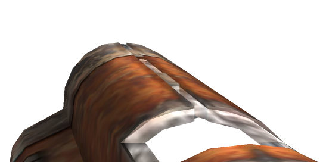

WASD to move, space to jump, left mouse shoots, right mouse zooms, F11 to go fullscreen, q shows score.
Use the Browser console to change mouse sensitivity. write sensitivity(500) press enter. Higher values are slower.
top score
0 Frags
Name
Frags
